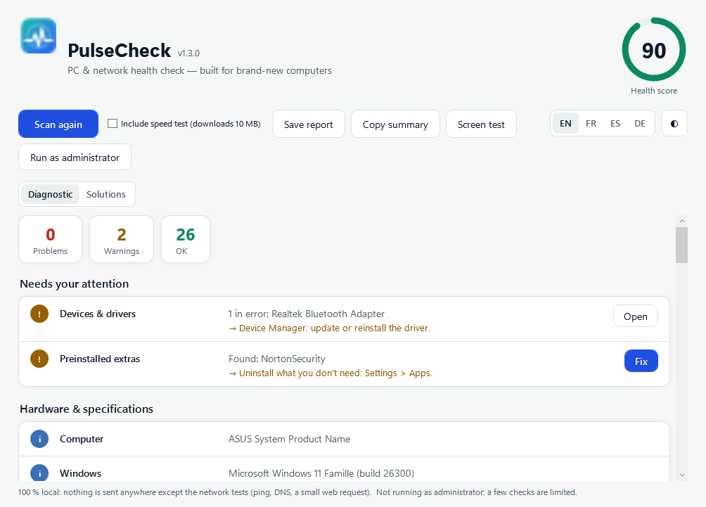
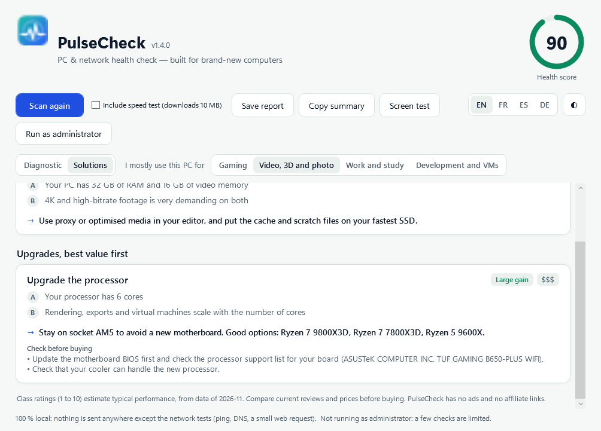

Free · Open source · Windows 10 and 11
Check your new PC before the return window closes.
PulseCheck inspects a computer in about a minute: real specifications, battery wear, memory speed, preinstalled extras, drive health, security and your internet connection. Plain-language results. Nothing is uploaded.
Health scoreTwo things worth a look
- Windows activationActivated
- Memory speed5600 MT/s, at rated speed
- Battery health18 % worn. A new laptop should show almost none
- Preinstalled extrasTrial antivirus and 2 promotional apps
- Drive healthSSD, healthy
- Router2 ms, 0 % packet loss
See it in action

One pass, four areas
Every result comes with a plain-language fix, a health score out of 100 and a report you can share.
- Hardware
- Processor, memory, graphics, drives, display resolution and refresh rate, BIOS version and serial number.
- New-PC checks
- Windows activation, memory speed and channels, battery wear, preinstalled extras, drive type and health.
- Health and security
- CPU and memory load, free space, drivers in error, startup programs, Defender, firewall, Secure Boot, TPM, Windows updates, crashes and disk errors.
- Network
- Router, ping, packet loss, jitter, Wi-Fi signal, DNS speed, web access, proxy and VPN, plus an optional speed test.
Solutions, not just problems
Tell PulseCheck what you use the PC for. It compares your hardware with your screen and your usage, then explains what to change, in order of value.
Quick wins, free
Refresh rate stuck at 60 Hz, memory below its rated speed, an old graphics driver, too many startup programs. Many have a Fix button that shows what it will change and asks you first; the others show the exact menu to open.
Settings for your hardware
Graphics presets matched to your card and your display, with the right upscaler (DLSS, FSR or XeSS) and a sensible frame cap.
Upgrades, explained A + B
Your graphics card (A) and your 1440p 144 Hz screen (B) call for a class 7 card. Each suggestion shows its reasons, a cost range and what to check first, such as the power supply.

Made for the day you unbox
Listings are hard to verify and return windows are short. These checks show whether the machine matches what you paid for.
Battery wear
A laptop sold as new should show almost no wear. A worn battery can mean a used or refurbished unit.
Memory at rated speed
Memory often runs slower than advertised until XMP or EXPO is enabled in the BIOS. Single-channel setups are flagged too.
Preinstalled extras
Finds trial antivirus and promotional apps, so you can remove them before they slow the PC down.
Dead-pixel test
Full-screen colours reveal dead or stuck pixels in seconds, while the screen can still be returned.
Finds where the connection breaks
Most tools just say “no internet”. PulseCheck tells you which link in the chain failed.
- Your PCAdapter and IP address
- RouterPing and Wi-Fi signal
- ProviderPing to 1.1.1.1 and 8.8.8.8
- DNSName lookup and web access
| PulseCheck sees | It means | Try |
|---|---|---|
| The router does not answer | Local problem: cable, Wi-Fi or router | Check the cable or Wi-Fi, then restart the router |
| The router answers, the internet does not | Problem with the box or the provider | Restart the box for 30 seconds, then contact your provider |
| Internet works, names do not resolve | DNS problem | Switch to 1.1.1.1 or 8.8.8.8 |
Built to be trusted
You are about to run a program that reads your PC. You should be able to check it first.
Open source
Every line is public on GitHub under the MIT license. Read it, audit it, build it yourself.
You stay in control
Scanning only reads. A Fix runs only when you press it, after showing exactly what it will change. Changes are logged on your PC and most can be undone.
Local by design
No account, no telemetry, nothing uploaded. Only the connection test uses the network, with the public servers listed in the privacy policy.
Verifiable releases
Each release is built by GitHub Actions from the public source and published with a SHA-256 hash and a signed build attestation.
A quiet website
No cookies, no analytics, no third-party fonts or scripts on this site.
Download PulseCheck
One file, free, no account.
Download PulseCheck.exeWindows 10 or 11, 64-bit · About 63 MB · Nothing to install, .NET is bundled
Getting started
- Download the file and double-click PulseCheck.exe.
- If Windows shows “Windows protected your PC”, click More info, then Run anyway.
- Click Scan my PC. For the fullest results, choose Run as administrator.
Why does Windows warn me?
SmartScreen warns about any program that is not yet widely downloaded or code-signed. PulseCheck is not code-signed yet. If you want certainty, verify the file as shown on the right.
Verify your download
Compare the file with the hash published on the release page, and confirm it was built from this repository.
# 1. Compare with the hash in PulseCheck.exe.sha256 on the release page Get-FileHash .\PulseCheck.exe -Algorithm SHA256 # 2. Confirm the build came from the public source (needs the GitHub CLI) gh attestation verify .\PulseCheck.exe --repo Brillant000/PulseCheck
Questions
Is it safe? What does it send?
Nothing is uploaded and there is no telemetry. PulseCheck reads information from your PC and saves a report only where you choose. Its network tests contact public servers: ping, DNS, one small web request and an optional 10 MB speed test. The privacy policy lists them all.
Does it change anything on my PC?
Scanning never changes anything. If you press Fix, PulseCheck shows exactly what it will do and asks you to confirm. Most changes can be undone from the app, and a record is kept on your PC. It never installs software or touches your antivirus or firewall.
Can it tell whether a PC is used or refurbished?
It shows signs, such as battery wear or a missing activation. These are indicators, not proof.
Do I need administrator rights?
Not for most checks. Choose Run as administrator for the TPM check and a few others.
Is it really free?
Yes. It is free and open source under the MIT license, with no ads and no paid tier.
Will it tell me which graphics card or memory to buy?
Yes. After a scan, the Solutions tab compares your graphics card, processor, memory, drives and screen with your usage (gaming, video and 3D, work, development) and explains what is worth upgrading and why. Performance classes are estimates, and there are no ads or affiliate links, so compare current reviews and prices before buying.
Which languages are supported?
English, Français, Español and Deutsch. More can be added: see the repository.